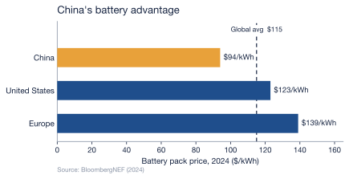

1 The Superpower Duel
The race to build humanoid robots is not one contest but two, run on different tracks toward different finish lines. The United States and China have each bet on a distinct theory of how an industry like this is won, and the divergence in those bets explains almost everything that follows in this report.
The American wager is software-first and capital-intensive: win the brain, and the body will follow. The Chinese wager is hardware-first and state-directed: drive the cost of the body toward commodity pricing, and scale will follow. These are tendencies, not absolutes — Tesla and Boston Dynamics build formidable hardware, and Chinese firms train their own models — but the center of gravity of each program is unmistakable, and neither bet is obviously wrong. The question this report exists to answer is which theory survives contact with the hidden cost of building at scale; but first we have to see the two machines clearly.
1.1 The American model: betting on the brain
The defining American move has been to treat the humanoid as an AI problem wearing a chassis. The clearest signal is NVIDIA’s Project GR00T, a general-purpose foundation model for humanoid robots launched in March 2024 and paired with simulation tools that let a robot learn skills from synthetic data rather than from slow, expensive physical trials (NVIDIA, 2024). The reasoning is the reasoning of frontier AI: if intelligence can be trained in the cloud and poured into any body, the body becomes a commodity and the model becomes the moat.
That conviction is priced into American capital markets. Figure AI, an American humanoid startup, raised $675 million in early 2024 at a reported $2.6 billion valuation, backed by Microsoft, the OpenAI Startup Fund, NVIDIA, and Jeff Bezos, alongside a collaboration with OpenAI to give its robots language and reasoning (Figure AI, 2024). By September 2025 the same company had closed a Series C of more than $1 billion at a $39 billion post-money valuation (Figure AI, 2025). These are software-industry numbers — valuations that assume the winner captures a platform, not a product line.
The cost philosophy follows from the capital philosophy. At Tesla’s October 2024 We, Robot event, Elon Musk put Optimus’s eventual price at $20,000–$30,000 — “less than a car” — though that is a long-range target for a humanoid Tesla has not yet sold (TechCrunch, 2024). Agility Robotics’ Digit, by contrast — offered largely through leasing rather than outright sale — has been reported at upwards of $250,000 per unit (The Robot Report, 2024). The American bet tolerates a high unit cost today on the assumption that scaled intelligence will collapse it tomorrow.
1.2 The Chinese model: betting on the body
China inverted the bet. Rather than chase the frontier model, it set out to make the physical robot cheap, abundant, and domestically supplied — and it did so from the top down. In November 2023 the Ministry of Industry and Information Technology issued national guidance naming humanoid robots a disruptive technology on the order of the computer, with targets to reach mass production “at an internationally advanced level” by 2025 and to make humanoids “an important new engine of economic growth” by 2027 (South China Morning Post, 2023; U.S.-China Economic and Security Review Commission, 2024).
This is not exhortation without money behind it. At the 2025 Two Sessions, the National Development and Reform Commission announced a ¥1 trillion (about $138 billion) state fund for “hard tech” — robotics and AI among them — deployed as market-based equity with horizons of up to twenty years (International Federation of Robotics, 2025; The Robot Report, 2025). The capital is already moving: by mid-2025, on The Robot Report’s tally, China had put an estimated $3.4 billion into new robotics ventures — 42% more than the United States and five times Europe — while six of its eleven major humanoid manufacturers had launched mass-production lines in 2024 (The Robot Report, 2025).
China’s structural advantage, though, is not the subsidy — it is the supply chain it already owns. A decade of electric-vehicle dominance built much of the component base a humanoid needs, and nowhere is the edge clearer than in batteries. In 2024, lithium-ion battery pack prices averaged $94/kWh in China — the world’s lowest — against a global average of $115/kWh, with US and European packs running 31% and 48% higher than China’s (BloombergNEF, 2024). The same battery supply chain that made Chinese EVs cheap now feeds Chinese robots. The emblem is Unitree’s G1: the standard model launched in 2024 at about $16,000 and Unitree now lists that same base configuration at $13,500 (The Robot Report, 2024; Unitree Robotics, 2026). The comparison demands an honest caveat — at 1.32 m and roughly 35 kg, the G1 is a smaller, lighter machine than the full-size Optimus or Digit, so it is not a like-for-like substitute (Unitree Robotics, 2026). Yet the gap is far too wide to be explained by size alone: China is shipping a capable humanoid for the price of a used car today, while Tesla still only targets $20,000–$30,000 for an Optimus it has not sold (TechCrunch, 2024) and Agility’s full-size Digit is reported at upwards of $250,000 (The Robot Report, 2024).
The United States is racing to build the smartest robot; China is racing to build the cheapest one. Whether intelligence or affordability turns out to be the binding constraint of the next decade is the question that decides the race.
1.3 Two theories, one table
| Dimension | United States | China |
|---|---|---|
| Core bet | Software-first: the foundation model is the moat | Hardware-first: the cheap, domestic body is the moat |
| Engine of progress | Private capital + frontier AI | State direction + industrial supply chain |
| Emblematic asset | NVIDIA GR00T foundation model (NVIDIA, 2024) | Unitree G1, now $13,500 (Unitree Robotics, 2026) |
| Capital mobilization | Figure AI: $39B private valuation (Figure AI, 2025) | NDRC: ¥1T (~$138B) state hard-tech fund (International Federation of Robotics, 2025) |
| Cost posture | High unit cost now; betting scale collapses it | Low unit cost now, via EV-derived parts (battery $94/kWh) (BloombergNEF, 2024) |
Note: the two “capital mobilization” entries are not the same unit — one firm’s private valuation versus a national fund — but each is the clearest emblem of how money is marshaled on its side.
These two philosophies are not merely strategies; they are the opening conditions of the robot’s entire life. Everything a humanoid will cost — to build, to run, to repair, and eventually to discard — is set in motion by which of these models produced it. The next chapter opens that machine up and counts the cost, component by component.